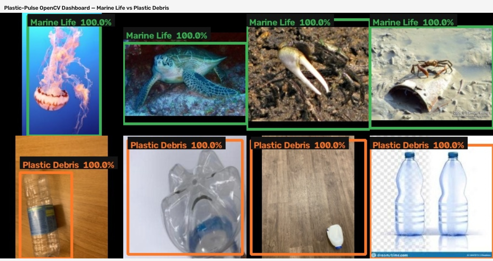

Internship Progress Summary
Plastic-Pulse Ocean Tracker — Weeks 1 & 2 of 4
Binary CV classifier: Marine Life vs Plastic Debris
github.com/guhankarthick2/Plastic-Pulse-Ocean-Tracker
· branch master
Executive summary
This internship builds a lightweight image classifier so ocean drones can tell living marine animals from plastic debris and avoid harming wildlife while cleaning waste.
Weeks 1–4: balanced dataset, MobileNetV2 classifier (train 100%, test 99.38% after Week 4 retrain), and OpenCV live detection with bounding boxes.
Submission links
| Code | Repository · classifier.py |
|---|---|
| Progress document | docs/PROGRESS_SUMMARY.md |
| Architecture page | outputs/week2/present.html |
| Data | Download zip (30,000 images, ~368 MB) · release page |
| Demo recording | Recorded separately by the intern |
Week 1 — Data foundations
Curate a balanced Kaggle set, resize to 224×224, normalize to [0, 1] at load, augment with flips and small rotations.
| Stage | marine_life | plastic_debris | Total |
|---|---|---|---|
| Curated raw | 2,500 | 2,500 | 5,000 |
| Processed 224×224 | 2,500 | 2,500 | 5,000 |
| Augmented (6×) | 15,000 | 15,000 | 30,000 |
Sources kept in the raw set
| Class | Kaggle dataset | Kept |
|---|---|---|
| marine_life | vencerlanz09/sea-animals-image-dataste | 2,342 |
| marine_life | mikoajfish99/marine-animal-images | 158 |
| plastic_debris | arkadiyhacks/drinking-waste-classification (PET/HDPE) | 1,516 |
| plastic_debris | zlatan599/garbage-dataset-classification (plastic) | 818 |
| plastic_debris | asdasdasasdas/garbage-classification (plastic) | 166 |
Augmentation variants
original · horizontal flip · vertical flip · +15° · −15° · +30°
Resize uses aspect-preserving pad (no stretch). JPEGs on disk are uint8; /255 produces [0, 1] (verified with 25 .npy QA samples per class). Scripts: curate_dataset.py, preprocess_and_augment.py, run_week1.py.
Week 2 — Frozen backbone + custom head
| Count | Role | |
|---|---|---|
| Total params | 2,422,081 | Full model (9.24 MB) |
| Trainable | 164,097 | Custom head only |
| Frozen | 2,257,984 | ImageNet MobileNetV2 |
Labels: 0 = marine_life, 1 = plastic_debris. Compiled with Adam, binary_crossentropy, accuracy / precision / recall / AUC.
Build: python scripts/build_model.py --backbone mobilenetv2 --save. Saved model is gitignored at models/saved/PlasticPulse_mobilenetv2_classifier.keras.
Dataset packaging
Share data/augmented/ (~362 MB, 30,000 JPEGs). Zip command:
python scripts/package_dataset.py
Output: outputs/share/PlasticPulse_augmented_dataset.zip. GitHub does not host these images in the source tree.
Week 3 — Train & evaluate
Stem-level 70/15/15 split · dropout 0.5 · early stopping · 12 hyperparameter experiments.
| Test accuracy | 99.47% |
|---|---|
| Precision / Recall / AUC | 99.29% / 99.64% / 0.999 |
| Fit | good_fit |
| Notes | Best full-aug setting: lr=1e-3, batch=64, dropout=0.5 |
Performance dashboard (one slide)

Accuracy & loss over epochs


Held-out test metrics

Confusion matrix & per-class metrics


Hyperparameter experiments

Full presentation: outputs/week3/present.html · Report: WEEK3_REPORT.md
Week 4 — OpenCV integration
OpenCV contour ROI → Keras classify → bounding box + label + confidence. Tested on 8 held-out __orig images: 8/8 correct.
OpenCV dashboard

Script: scripts/opencv_detect.py · Report: WEEK4_REPORT.md · Retrain: train 100%, test 99.38% (dropout=0.2)